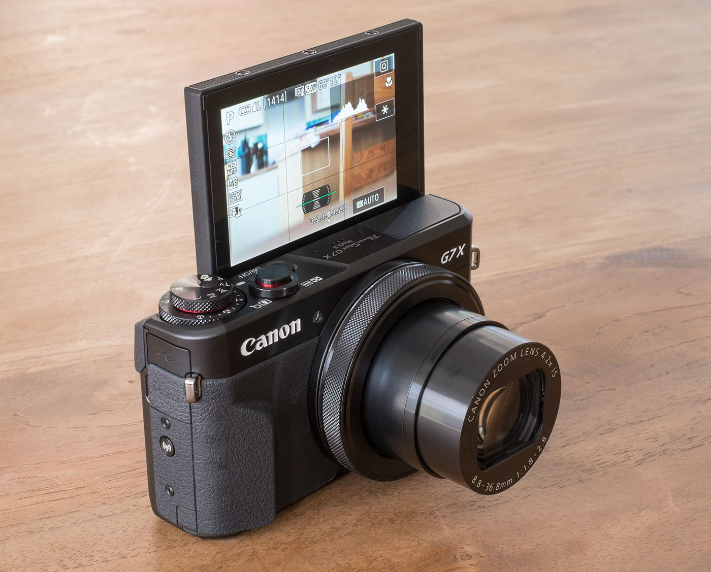
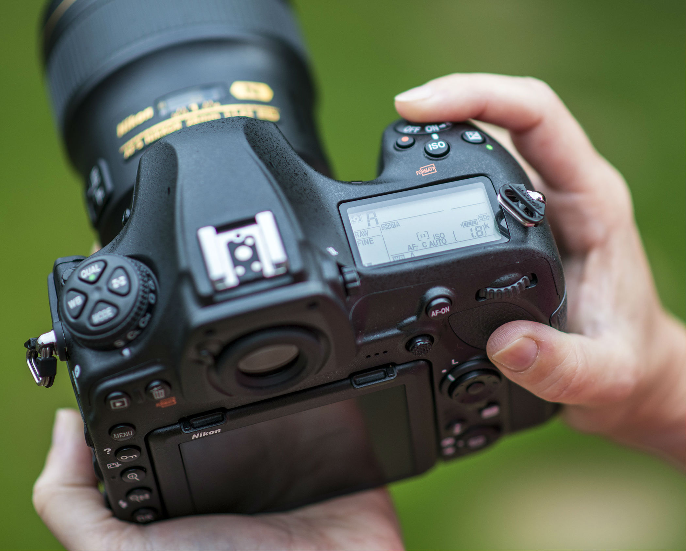
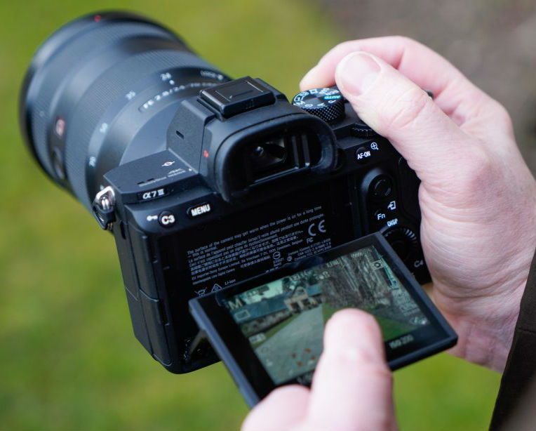
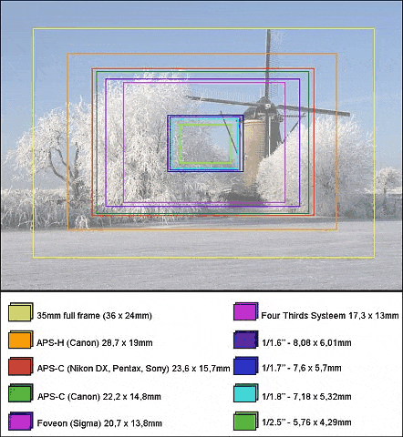
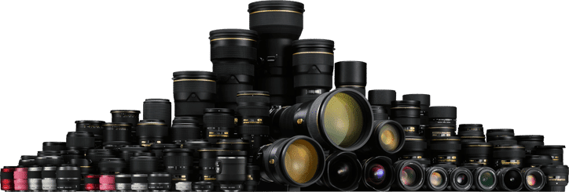

Het kiezen van een camera
Door: Dick van Braak
Laatste update: 25-8-2025
Inleiding
Er zijn veel verschillende camera's te koop. Van smartphone tot professionele camera's. We leggen hier echter de focus op vogelfotografie. Daarbij valt m.i. de smartphone echt af. In het vervolg komen we hier nog op terug. Verder ontkomen we er niet aan om wat technische termen te behandelen. Hierdoor wordt het maken van een eigen keuze mogelijk.
Overzicht
Verschillende soorten camera's
Grofweg zijn er 4 soorten camera's op de markt:
- Smartphones
- Compactcamera's
- Spiegelreflextcamera's
- Systeemcamera's
Smartphone
De smartphone is voor een ieder wel bekend. Naast de vele mogelijkheden die erop zitten kan je er mee
fotograferen en ook nog bellen. Omdat vogels niet blijven zitten als je dichter bij komt, is het noodzakelijk dat
je het onderwerp - de vogel dus - dichterbij kan halen met je camera. Dat is nu juist iets waar een smartphone
niet goed in is. Uiteraard kan je wel inzoomen, maar dat is vaak 'digtiaal' inzoomen wat de kwaliteit van de foto
zeker niet beter maakt.
Daarnaast is de sensor zo klein, dat ook dat een minpunt is t.o.v. de overige camera's.
Zie ook de uitleg bij sensoren.
Compactcamera
Er zijn inmiddels heel veel verschillende compactcamera's op de markt. Het voordeel van een compactcamera is dat
deze gemakkelijk is mee te nemen. Soms past deze zelfs in je broekzak. Ook hier geldt weer hetzelfde als bij de
smartphone dat je het onderwerp niet altijd goed dichtbij kunt halen.
Wel zijn er zogenaamde 'Bridgecamera's' die wel de mogelijkheid hebben om 'optisch' in te zoomen. Soms wel tot
100x. Deze zijn dus zeker te gebruiken voor vogelfotografie.

Het in- en uitzoomen gebeurt echter electronisch. Het nadeel vind ik daaraan dat het even duurt voordat je
het onderwerp voldoende hebt ingezoomed. Zeker een vliegende vogel is vaak sneller dan het inzoomen van zo'n
camera.
Toch voor vogelfotografie zeker wel een serieuze kandidaat. Het feit dat je niet loopt te sjouwen met een grote zware
lens, het compacte formaat van zo'n camera en de prijs zijn zeker voordelen t.o.v. de hierna besproken camera's.
Spiegelreflexcamera
Een spiegelreflexcamera wordt vaak ook wel een DSLR-camera genoemd. Dit staat voor Digital Single Lens Reflex.
Deze camera wordt gekenmerkt door de spiegel die er in zit. Het onderwerp dat je wilt fotograferen komt door de
lens via de spiegel terecht in de zoeker waar je doorheen kijkt. Dit betekent dat je de onderwerpen op een
analoge manier bekijkt, direct via de lens. Een ander kenmerk van de spiegelreflexcamera zijn de verwisselbare
lenzen.

Afhankelijk van het soort lens is deze camera uitermate geschikt voor vogelfotografie. Bij het gebruik van een
'zoomlens' werkt inzoomen erg snel doordat je dat handmatig regelt door te draaien aan de ring op de lens. Een
groot voordeel is dat je het onderwerp ziet zoals het is. Je kijkt door de lens heen (analoog) en je ziet dus
geen digitaal vertaald beeld. Wel maakt de spiegel die erin zit best wel geluid als je een foto maakt.
Over het algemeen zijn deze camera's best groot. Dan hebben we het alleen nog over de 'body'. Dus camera zonder
lens. Een goede lens om vogels te fotograferen is nog weer groter. Dat zijn weer nadelen van de spiegelreflexcamera.
Systeemcamera
Inmiddels is de spiegelreflexcamera ingehaald door de systeemcamera. De paradepaardjes van veel merken zijn eigenlijk
alleen maar systeemcamera's. Deze zijn vaak net wat compacter dan een spiegelreflex camera doordat er geen spiegel
meer in zit. Alles gaat digitaal.

Het beeld is dus ook niet meer analoog. Veel systeemcamera's hebben zelfs geen zoeker meer waardoor je aangewezen
bent op je LCD-scherm.
Doordat alles digitaal is, zijn deze camera's enorm snel en kan je enorm veel foto's achter elkaar maken.
Daarnaast kan deze camera geluidloos foto's maken, wat ook een pré is voor vogelfotografie.
Sensoren
Bij een analoge fotocamera werd de foto vastgelegd op een negatief. Bij een digitale camera wordt de foto vastgelegd op een sensor. De sensor is namelijk het onderdeel van de camera dat het licht (het beeld dat je ziet) opvangt en vervolgens omzet in een digitaal signaal. Het beeld wordt door de sensor opgevangen door de pixels en hoe groter de sensor, des te hoger de kwaliteit en des te meer beeld de camera kan opvangen. Wil je dus foto's van een hoge kwaliteit? Pak dan een fototoestel dat in jouw budget valt met een zo groot mogelijke sensor. In onderstaande afbeelding wordt het verschil per sensor visueel weergegeven in een foto.

Toch nog wel een belangrijke opmerking over cropfactors. (Een full-frame sensor heeft een factor van 1, maar een
APS-C van canont heeft een cropfactor van 1.7)
Dit houdt in dat zo'n camera een vergroting krijgt. Immers, een deel van de foto valt maar op de sensor, maar is
even groot als dat
van een full frame camera. Praktisch gezien heb je dus een groter zoom-bereik. Een lens van 400mm wordt dan opeens
1.7 * 400mm = zo'n 680mm.
Voor vogelaars soms nog wel doorslaggevend om geen Full-frame camera aan te schaffen. Zeker als het budget dat
niet toelaat.
Er zit natuurlijk ook een keerzijde aan zo'n cropfactor. Het gaat nu wat te ver om ook dat te beschrijven.
Lenzen

Kies je voor een compactcamera, dan is deze paragraaf niet relevant. Immers, dan is wisselen van lenzen niet
mogelijk.
Kies je voor een systeem- of spiegelreflexcamera, dan is dit wel een belangrijk stap. De kwaliteit van je foto's
hangt voor het grootste deel
af van een goede lens.
Uiteraard past niet elke lens op elke camera. Je bent afhankelijk in je keuze van het merk camera dat je gekozen
hebt. Let daar dus goed op en laat je
in een fotozaak goed voorlichten.
In dit artikel beperk ik me tot 2 soorten lenzen. Dit vanwege de focus op 'vogelfototgrafie'. Hieronder een
eenvoudig overzicht, waarbij we
ook nu weer verwijzen naar de fotovakman!
| Soort | Beschrijving |
|---|---|
| Telelens (>100mm) | Een telelens heeft een bereik vanaf ca 100mm. Een telelens van 100 - 400mm begint dus bij 100mm en kan inzoomen tot 400mm. Hierdoor ben je best flexibel. Stel dat die vogel nu net een paar meter voor je zit op een paaltje, dan kan je deze op 100mm toch helemaal erop krijgen. Wel is de kwaliteit vaak net wat minder dan bij de lensen met een vaste stand (prime-lenzen). Dit omdat er meer materiaal in verwerkt moeten worden. |
| Primelens | Een primelens heeft maar één maat. Bijvoorbeeld alleen maar 400mm. In het voorbeeld wat hiervoor genoemd werd kan het zijn dat een vogel te dichtbij zit, waardoor je deze er niet helemaal op krijgt. Je bent dus niet zo flexibel. Wel zijn deze lenzen vaak van betere kwaliteit én ook sneller. |
Bedenk dus goed wat je wilt fotograferen. Waarvoor ga je je foto's voor gebruiken? Heb je iemand in je omgeving die al doet aan vogelfotografie, laat je bijpraten!
Samenvatting
Bovenstaande informatie geeft in het kort weer wat de verschillen zijn en wat meer geschikt is voor vogelfotografie.
Wil je meer weten, kijk dan eens op de website van een fotozaak. Vaak hebben zij een dudielijk
keuzeprogramma wat je door kunt lopen.
Zie bijvoorbeeld de website van Kamera-express...
Google maar eens op 'welke camera moet ik kopen'. Een veelheid van informatie staat voor je beschikbaar.
Waarbij ik hoop dat bovenstaande eenvoudige informatie je wat op weg heeft geholpen.
| Voordelen | Nadelen | |
|---|---|---|
| Smartphones | Makkelijk mee te nemen. Je kan er meer mee dan alleen fotograferen. | Inzoomen op onderwerp slecht mogelijk. Kwaliteit daardoor niet altijd even best. |
| Compactcamera's | Compact formaat. Mogelijkheid om inzoomen aanwezig. Soms zelfs zeer uitgebreide mogelijkheden. | Inzoomen bij snel onderwerp niet altijd snel genoeg. Kwaliteit door kleine sensor niet optimaal. |
| Spiegelreflexcamera's | Snelle camera's met vaak goede sensors. Lenzen verwisselbaar en groot assortiment. | Best groot formaat, maakt geluid bij het maken van foto's. Spiegel aanwezig die mechanisch werkt en dus slijtage kan vertonen. |
| Systeemcamera's | Snelle camera's met goede sensors. Lenzen verwisselbaar en inmiddels een groot assortiment. Compacter dan spiegelreflex en sneller en stiller. | Digitale doorkijk in de zoeker, dan kan even wennen zijn. |